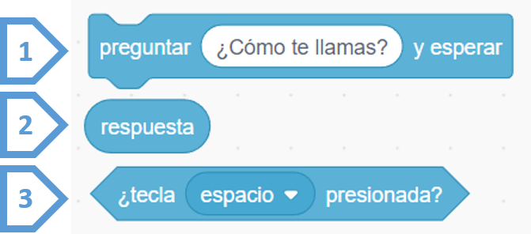
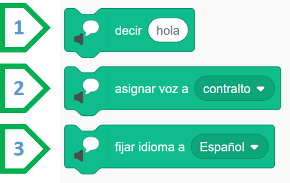
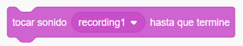
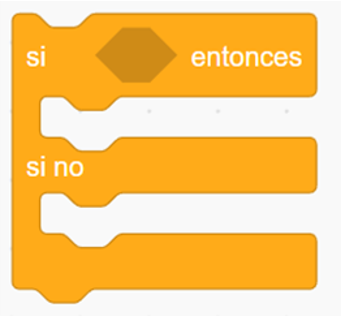
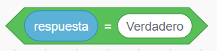
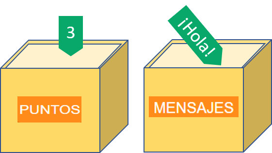
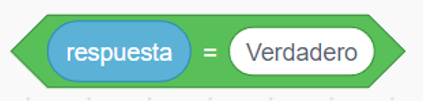
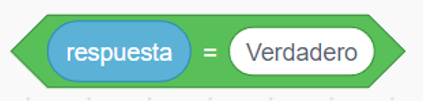

Hay muchísimos juegos de preguntas y respuestas con los que seguramente te has divertido en compañía de tu familia o de compañeros y compañeras de clase. En estos juegos hay muchos tipos de preguntas y respuestas que nos pueden servir para elaborar nuestros juegos con Scratch. También escuchamos a diario preguntas que nos hacen nuestros profesores y profesoras sobre diferentes temáticas. Todo ello nos va a ayudar a conseguir nuestro reto.
En esta página vamos a aprender a elaborar juegos de preguntas y respuestas con Scratch, juegos que nos sirvan para aprender de una forma divertida. Además, nos convertiremos en profes, elaborando cuestionarios interactivos del cuerpo humano.
¿Preparadas y preparados para aprender? ¡Acompáñame!
1. Memorización
Para conseguir alcanzar una meta es importante que seas un buen o buena estratega. Es decir, tener métodos, técnicas, “trucos” para llegar antes o de forma más fácil donde tú quieres.
Ahora te voy a enseñar una estrategia, ¡Aprovéchala para alcanzar tu reto!
El nombre de la estrategia es memorización. Cuando estás realizando una tarea es normal que encuentres información que te resulte complicada de memorizar y que pueda llegar a bloquearte. Con esta estrategia vas a aprender a memorizar y recordar la información usando algunos consejos fáciles que te ayudan a saber cómo organizar tu tiempo y qué hacer en cada caso para superar la dificultad.
Podrás encontrar todo lo que necesitas sobre esta estrategia en los siguientes enlaces a las siguientes guías de la competencia de aprender a aprender:
Tómate el tiempo que necesites y recuerda que siempre puedes preguntarle al docente o a algún compañero o compañera cuando no entiendas algo.
¡Ánimo, seguro que lo haces genial!
2. Tipos de preguntas y respuestas
Antes de aprender a programar juegos de preguntas y respuestas con Scratch, debemos saber qué tipos hay y cuáles son los que más nos interesan en el lenguaje de programación.
Aunque se pueden hacer muchas clasificaciones, los tipos de preguntas que más se utilizan son las siguientes:
Preguntas abiertas: Son aquellas que no se pueden contestar con un sí o un no. Suelen tener respuestas amplias en las que se desarrolla un tema o se reflexiona sobre algo.
Preguntas cerradas: Son aquellas preguntas que se responden con un sí, un no, verdadero o falso o una respuesta muy corta.
Preguntas orales: Son las que se expresan mediante la palabra hablada.
Preguntas escritas: Son aquellas que se expresan por escrito mediante cualquier soporte: papel, digital, etc.
Preguntas de opción múltiple: Estas preguntas permiten elegir entre varias respuestas, que suelen ser cerradas. Puede haber una sola respuesta correcta o varias.
Preguntas de rellenar huecos: En ellas se responde rellenando los huecos o espacios en blanco de un texto con las palabras que faltan.
Preguntas de emparejar: Son aquellas en las que se relacionan varias preguntas con sus respectivas respuestas correctas; o se unen palabras, expresiones, frases...según un criterio.
Preguntas de escala de valoración: Son preguntas que se suelen emplear en encuestas y cuestionarios y que tienen el objetivo de hacer una valoración mediante una escala.
Lectura facilitada
Scratch tiene distintos tipos de juegos y preguntas
Tú eliges los tipos de juegos y preguntas
que te interesan.
Los tipos de preguntas son estos:
- Preguntas abiertas.
Son preguntas de desarrollo.
En estas preguntas tú reflexionas sobre un tema.
- Preguntas cerradas.
Son preguntas de respuesta:
-Sí o no
-Verdadero falso
-Respuesta corta.
- Preguntas orales.
Son preguntas expresadas con la palabra hablada.
- Preguntas escritas.
Son preguntas expresadas en papel.
- Preguntas de opción múltiple.
Son preguntas con varias respuestas cerradas
Puede haber una sola respuesta correcta o
varias respuestas correctas.
- Preguntas de rellenar huecos:
En estas preguntas
tú rellenas espacios en blanco
con las palabras que faltan.
- Preguntas de emparejar:
Tú relacionas varias preguntas
con sus respuestas correctas.
- Preguntas de escala de valoración:
Son preguntas para valorar.
Estas preguntas usan escalas.
Son preguntas usadas en encuestas y cuestionarios.
Definición:
Es una herramienta para programar fácil.
Ejemplo:
Con Scratch puedo programar presentaciones interactivas.
3. Profe por un día
Imagina que tú eres el profesor o la profesora y quieres hacer un examen o prueba para saber los conocimientos que han adquirido tus alumnos y alumnas sobre el cuerpo humano.
A continuación tienes varias ejercicios para practicar ser profe por un día. En cada uno de ellos se practica con un tipo de preguntas y respuestas.
Después de leer las diferentes opciones, elige aquella que veas más adecuada para ti o creas que te vas a sentir más cómodo o cómoda.
Opción A: Verdadero o falso
Responde con verdadero si es correcta la definición que tienes a continuación o falso si no es correcta.
Retroalimentación
Falso
Opción B: Empareja
Las preguntas que se responden con la técnica de emparejar son muy útiles para elaborar juegos interactivos.
Escribe en una columna conceptos, elementos, órganos del cuerpo, etc; en otra columna escribe otras palabras que tengan relación con las anteriores y puedan emparejarse mediante flechas.
Una vez que las hayas escrito, puedes probar proponiéndole a un compañero o compañera que haga el examen. De esta manera sabrás si las preguntas estaban bien planteadas.
Lumen dice ¿Necesitas un ejemplo?
Un ejemplo sería:
¿Qué órgano corresponde a cada aparato del cuerpo humano? Relaciona cada órgano del cuerpo humano con su aparato correspondiente:
Las preguntas de opción múltiple son muy interesantes, ya que que pueden ofrecer una o varias respuestas correctas.
Elabora una prueba en la que hagas al menos cuatro preguntas sobre el tema del cuerpo humano. Todas ellas tendrán más de una respuesta correcta.
Una vez que las hayas escrito, puedes probar proponiéndole a un compañero o compañera que haga el examen. De esta manera sabrás si las preguntas estaban bien planteadas.
Lumen dice ¿Necesitas un ejemplo?
Un ejemplo sería:
¿Cuáles de los siguientes aparatos necesita nuestro cuerpo para proporcionarle energía? Elige las opciones correctas.
a) Aparato digestivo. b) Aparato respiratorio. c) Aparato reproductor. d) Aparato circulatorio.
Opción D: ¿Cuál es mejor?
En este ejercicio vas a comparar las preguntas de respuestas cerradas con las de respuestas abiertas para valorar qué tipo es más apropiado para elaborar juegos interactivos de preguntas y respuestas.
Elabora una prueba o examen en la que hagas al menos cuatro preguntas sobre el tema del cuerpo humano. Dos de ellas estarán redactadas para responder con una palabra o frase; sin embargo, las otras dos estarán expresadas para dar una respuesta más larga, en la que se desarrolle una parte del tema del cuerpo humano.
Una vez que las hayas escrito, puedes probar proponiéndole a un compañero o compañera que haga el examen. De esta manera sabrás si las preguntas estaban bien planteadas.
¿Qué tipo de preguntas son más adecuadas para los juegos que quieres elaborar? Razona tu respuesta.
Lumen dice ¿Necesitas un ejemplo?
Un ejemplo de pregunta abierta sería: ¿Cómo crees que se se produce la energía que necesita nuestro cuerpo en las células? Un ejemplo de pregunta cerrada sería: ¿Los glóbulos rojos transportan el oxígeno?
4. Programo juegos de preguntas y respuestas
En las pestañas que tienes a continuación tienes todo lo que necesitas saber para programar un juego de preguntas y respuestas.
Lee atentamente el contenido de cada una de ellas.
Entorno de Scratch
Si estás familiarizado con el entorno de Scratch te resultará fácil elegir un fondo apropiado para tu juego, insertar personajes, disfraces, sonidos, etc. Si no lo recuerdas bien o no has hecho nunca un proyecto con Scratch, puedes verlo en la siguiente imagen interactiva haciendo clic en cada icono activo.
Bloques protagonistas
Para elaborar juegos de preguntas y respuestas con Scratch vamos a utilizar varios tipos de bloques, pero los que más se suelen utilizar son los de la categoría sensores. Son los que nos van a permitir hacer preguntas y esperar una respuesta.
A continuación tienes los bloques de la categoría sensores y los de otras categorías que también se pueden utilizar:
A) Categoría Apariencia
1. Decir ( ) durante ( ) segundos: Este bloque se utiliza para poner bocadillos de texto a los personajes; por lo tanto, es fundamental para hacer una introducción del juego, explicar en qué consiste, el tipo de respuestas que hay que dar, etc. Debemos calcular el tiempo que se tarda en leer el texto para modificar en la segunda ventana los segundos que va a permanecer el bocadillo.
2. Decir ( ): Tiene la misma utilidad que el bloque anterior, pero no se puede indicar el tiempo. Además, puedo utilizarlo para encajar en la ventana ovalada el sensor respuesta, que vamos a ver a continuación.
B) Categoría Sensores
1. Preguntar ( ) y esperar: Utilizaremos este bloque para escribir en la ventana ovalada la pregunta que queremos hacer y esperaremos una respuesta.
2. Respuesta: Este bloque encaja en el bloque decir ( ), de la categoría anterior, y sirve para guardar la respuesta que queremos dar.
3. ¿Tecla ( ) presionada?: Encaja en la ventana de un bloque condicional. Indica la condición: que la tecla ( ) esté presionada.
C) Texto a voz:

Los bloques de esta categoría sirven para traducir a mensaje de voz lo que pongamos en la ventana ovalada. Tienes que hacer clic en el icono que tienes a la derecha para acceder a ellos.
1. Decir ( ): Dice lo que pongamos en la ventana ovalada.
2. Asignar voz a ( ): En la pestaña desplegable se selecciona el tipo de voz que queremos escuchar: contralto, tenor, gigante...
3. Fijar idioma a ( ): Se utiliza para seleccionar el idioma. También es útil para hacer juegos de preguntas y respuestas en otro idioma.
D) Categoría Sonido
Tocar sonido ( ) hasta que termine: Reproduce un sonido hasta que se termine. Es útil cuando queremos grabar preguntas orales con nuestra propia voz.
No olvides que, utilices un tipo de bloques u otros para hacer tus preguntas, tienes que iniciar tu programa con un evento; por ejemplo, Al hacer clic en la bandera verde.
Condiciones
Si respondes bien a una pregunta que te hace tu profesora o profesor, sueles recibir un mensaje de felicitación; por ejemplo, ¡Muy bien! Si por el contrario respondes mal, sueles recibir otro tipo de mensaje para que sepas lo que tienes que hacer; por ejemplo, ¡Debes estudiar más!
A la hora de programar, se repite mucho esta estructura:
En la situación anterior, la palabra Si anuncia que hay una condición;decir una respuesta correcta es la condición;recibir un mensaje de felicitación es una consecuencia; y recibir otro tipo de mensaje para saber qué hacer, es otra consecuencia.
Para llevar esto a la programación necesitamos bloques condicionales como los que ves en la imagen de la izquierda.
Si se cumple lo que pongamos en la ventana hexagonal, entonces se ejecutarán las instrucciones que pongamos dentro.
Si no se cumple, entonces se ejecutarán otras instrucciones.
Necesitamos también otros bloques para encajar la condición en la ventana hexagonal, son los operadores, de la categoría Operadores. Contienen dos cajas ovaladas que relacionan un sensor (respuesta)con una magnitud o un valor (verdadero). Si hay dos respuestas posibles utilizamos los operadores booleanos, que son aquellos en los que podemos poner dos condiciones en una.
En la imagen de la derecha tienes un ejemplo de cómo podría quedar el programa.
Si quieres profundizar más en estructuras condicionales, bucles, operadores y sensores, haz clic aquí para acceder al REA "Juega conmigo" de 6º de E. Primaria en su apartado "Controla tu videojuego".
Puntos
¿Te gustaría poner un marcador de puntos en tu juego? Para ello necesitas utilizar variables. Las variables en Scratch son como cajas etiquetadas en la que se pueden almacenar datos hasta que los necesitemos para programar. Estos datos almacenados pueden ser números y palabras y, al igual que podemos sacar o meter nuevos objetos en esas cajas etiquetadas, podemos quitar o añadir nuevos datos en nuestra variable.
Para crear y utilizar una variable en Scratch puedes seguir los siguientes pasos:
Haz clic, dentro de la pestaña código en la categoría Variables.
Pulsa en el botón Crear una variable. Se abre una ventana emergente para ello.
Nómbrala. Primero, dale a tu variable un nombre útil y sencillo.
Conoce tus bloques. Los bloques para estas variables aparecerán en la categoría variables:
Dar a mi variable el valor ( ): Se utiliza para asignar un valor a la variable. Por ejemplo, en el caso de la variable puntos asignaremos el valor 0 cuando se inicie la partida.
Sumar a mi variable...: Cada vez que se cumpla una condición sumaremos el valor indicado.
Mostrar o esconder variable, según queramos que se muestre o no en la pantalla de juego.
Para que el marcador empiece en 0 al iniciar el juego, necesitamos el programa de la izquierda. Para que sume un punto en cada respuesta correcta, utilizamos el bloque condicional de la derecha.
Si quieres profundizar en el tema de las variables, haz clic aquí para acceder al REA de 6º de E. Primaria "Juega conmigo" en su apartado 5.3. Ganes o pierdas.
Vídeo
El siguiente vídeo explica muy bien cómo se hace un juego sencillo de preguntas y respuestas del tipo Verdadero o falso.
Dar instrucciones a una máquina o aparato para que realice funciones.
Ejemplo:
Vamos a programar el robot.
Definición:
Cajas de instrucciones para que los personajes y demás elementos hagan cosas.
Ejemplo:
El personaje hace lo que dice el bloque cuando hago click encima.
Definición:
Un grupo de instrucciones que se dan a una máquina o aparato para que haga algo.
Ejemplo:
El programa completo hace que el personaje se mueva mucho.
Definición:
Distintas partes de Scratch que se pueden controlar.
Ejemplo:
En la categoría de movimiento le digo al personaje qué hacer.
Kardia dice ¿Quieres aprender otra forma de hacer este juego?
Para hacer un juego de preguntas y respuestas se puede utilizar otro tipo de variables llamadas listas. En el siguiente vídeo te lo cuenta paso a paso.
5. Encuentra la palabra secreta
Consigue todos los retos para alcanzar el desafío.
1
Te propongo un desafío:
Encuentra la palabra secreta. Esta palabra está relacionada con el lenguaje de programación por bloques. Si contestas bien a las preguntas de cada reto, podrás adivinar cuál esa palabra secreta, ya que la iniciales de las respuestas corresponden con sus cuatro primeras letras.
¡Ánimo, lo vas a conseguir!
¿A qué categoría pertenecen los bloques que sirven para hacer preguntas y esperar una respuesta?
Cuando programas un juego de preguntas y respuestas, ¿qué tipo de bloques se utilizan para dar un mensaje cuando se acierta la pregunta y otro diferente si se falla?
¿Cuál es la acción que consigue ejecutar un bloque de tipo bucle?
¿A qué categoría pertenecen los bloques que sirven para programar lo que hay que decir en un juego de preguntas y respuestas?
Su navegador no es compatible con esta herramienta.
6. Programa tus juegos
¡Nos ponemos en marcha para programar juegos de preguntas y respuestas!
Scratch nos ha ofrecido muchas posibilidades para que estos juegos sean divertidos y, al mismo tiempo, nos ayuden a aprender y compartir esos conocimientos con los demás.
A continuación tienes una serie de ejercicios que te van a convertir en programador o `programadora de juegos. Elige la opción que consideres más adecuada para ti, pero si te animas puedes probar a realizar la siguiente.
Opción A: Imita el modelo.
Nos entrenamos como programadores de juegos imitando un modelo. Para ello sigue los siguientes pasos:
Entra en Scratch y crea un proyecto nuevo.
Inserta al menos un fondo y un personaje, que va a ser el que haga las preguntas.
Reproduce en el área de programación el siguiente programa para tu personaje:
Como puedes observar, en este programa, el personaje hace una pregunta y espera la respuesta. Luego, con bloques condicionales ejecutará las siguientes órdenes: Si esta respuesta es verdadera, dirá ¡Correcto! Si no es correcta, dirá ¡Debes estudiar más! Seguidamente hace lo mismo con una segunda pregunta.
4. Haz clic en la bandera verde y comprueba si el programa está correcto.
Opción B: Completa el modelo.
Nos entrenamos como programadores de juegos completando un modelo. Para ello sigue los siguientes pasos:
Entra en Scratch y crea un proyecto nuevo.
Inserta al menos un fondo y un personaje, que va a ser el que haga las preguntas.
Reproduce en el área de programación el siguiente programa para tu personaje:
Como puedes observar, en este programa, el personaje hace una pregunta y espera a la respuesta. Luego, con bloques condicionales ejecutará las siguientes órdenes: Si esta respuesta es verdadera, dirá ¡Correcto! Si no es correcta, dirá ¡Debes estudiar más! Seguidamente hace lo mismo con una segunda pregunta.
4. Amplia el programa con dos preguntas más.
5. Haz clic en la bandera verde y comprueba si el programa está correcto.
Opción C: Preséntate y pregunta
Elabora un juego de preguntas y respuestas que cumpla los siguientes requisitos:
En primer lugar tienes que programar que tu personaje haga una presentación, diciendo quién es y en qué consiste el juego.
A continuación, el personaje planteará al menos tres preguntas y dará un mensaje cuando la respuesta es correcta y otro distinto si no es correcta.
Haz clic en la bandera verde para comprobar si todo está correcto.
Lumen dice ¿Necesitas ayuda?
¿Ha fallado algo?
Si no ha ido todo como esperabas, no te preocupes, ten en cuenta lo siguiente:
Para hacer la presentación necesitas, al menos, los siguientes bloques:
Evento al hacer clic en bandera verde.
Bloque decir ( ) durante ( ) segundos.
En la opción A de esta actividad puedes consultar la imagen en la que se pone un ejemplo de programa para el paso 2.
Opción D: Con un marcador es más divertido
Los juegos suelen ser más divertidos si tienen el aliciente de ganar puntos, aunque recuerda que debe ser siempre una competitividad sana. ¿Te atreves a programar un juego de preguntas y respuestas que tenga un marcador que indique los puntos que ganas cuando aciertas las preguntas que te hacen? Sigue este guion para que tu programa funcione correctamente:
En primer lugar tienes que programar que tu personaje haga una presentación, diciendo quién es y en qué consiste el juego.
A continuación, el personaje planteará al menos cinco preguntas y dará un mensaje cuando la respuesta es correcta y otro distinto si no es correcta.
Utiliza las variables para programar un marcador que sume un punto cada vez que se acierte una pregunta.
Haz clic en la bandera verde para comprobar si todo está correcto.
Lumen dice ¿Necesitas ayuda?
¿Te ha resultado difícil?
Si tu programa no ha funcionado bien y no sabes cómo corregirlo, consulta el apartado 3. Programo juegos de preguntas y respuestas. En la pestaña Variables y en la parte final del vídeo explica cómo programar un marcador.

 Definición:
Definición:

 hexagonal, son los operadores, de la categoría Operadores. Contienen dos cajas ovaladas que relacionan un sensor (respuesta)con una magnitud o un valor (verdadero). Si hay dos respuestas posibles utilizamos los operadores booleanos, que son aquellos en los que podemos poner dos condiciones en una.
hexagonal, son los operadores, de la categoría Operadores. Contienen dos cajas ovaladas que relacionan un sensor (respuesta)con una magnitud o un valor (verdadero). Si hay dos respuestas posibles utilizamos los operadores booleanos, que son aquellos en los que podemos poner dos condiciones en una. 
 Para que el marcador empiece en 0 al iniciar el juego, necesitamos el programa de la izquierda. Para que sume un punto en cada respuesta correcta, utilizamos el bloque condicional de la derecha.
Para que el marcador empiece en 0 al iniciar el juego, necesitamos el programa de la izquierda. Para que sume un punto en cada respuesta correcta, utilizamos el bloque condicional de la derecha. Definición:
Definición: Definición:
Definición: Definición:
Definición: Definición:
Definición: